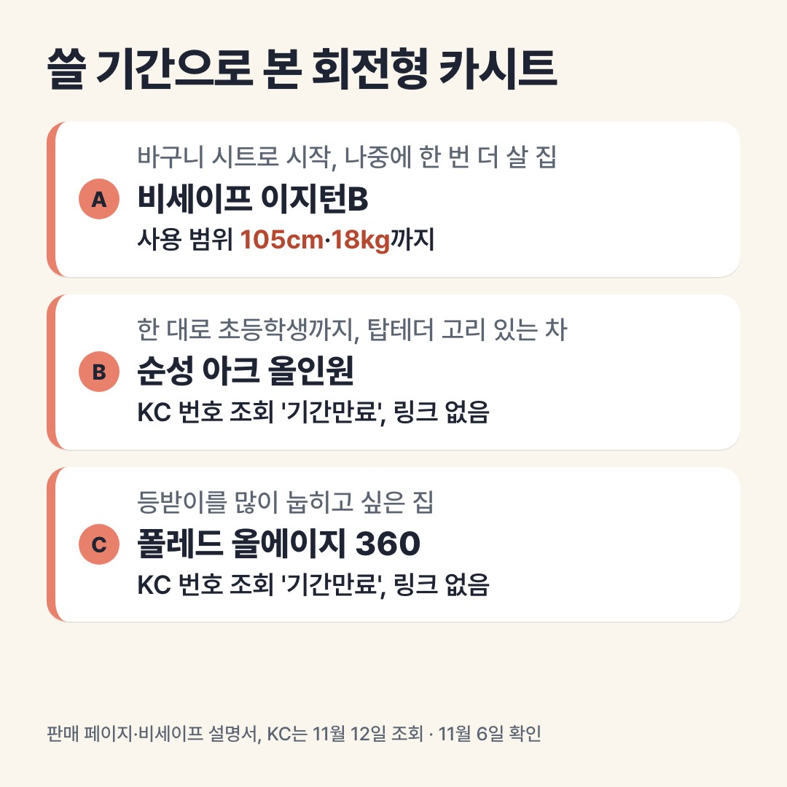
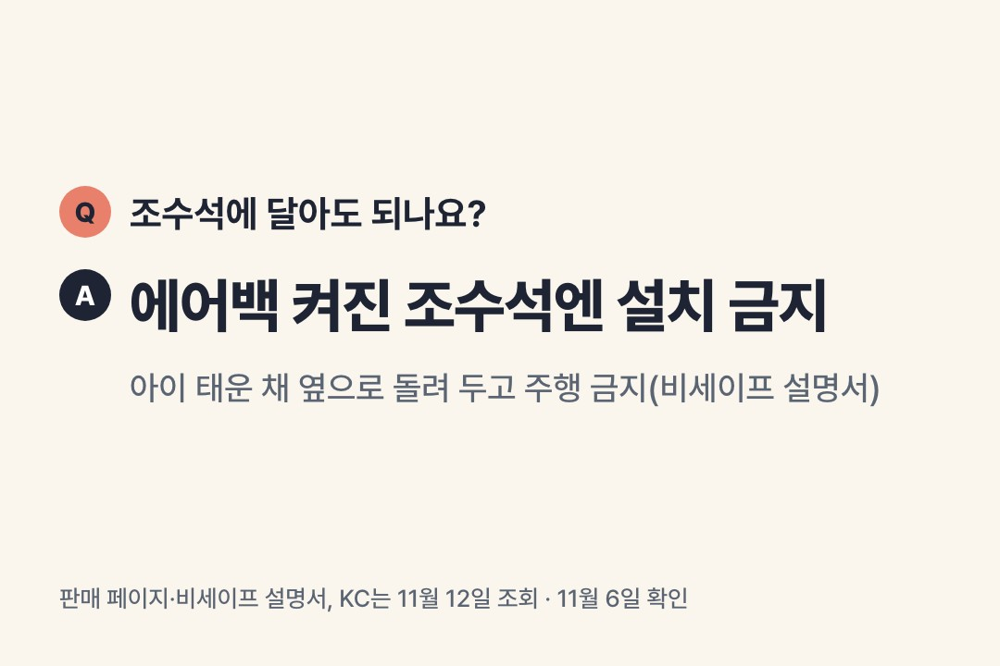

이 게시물은 쿠팡 파트너스 활동의 일환으로, 이에 따른 일정액의 수수료를 제공받습니다.
비세이프 이지턴B 몇 살까지? 키 105cm·18kg, 신생아~5세 표기
비세이프 이지턴B는 제조사 설명서 기준으로 키 40~105cm·최대 18kg까지 뒤보기가 승인돼 있고, 앞보기는 88~105cm에서 아이가 15개월을 넘긴 뒤에만 쓰라고 해요. 설명서는 가능한 한 오래 뒤보기로 쓰기를 권하고, 연령은 약 0~4세로 적었어요(쿠팡 판매 페이지 표기는 신생아~5세, '0~15개월 뒤보기·16개월 이후 앞보기'). 이 범위를 넘긴 뒤에도 한 대로 쓰는 36kg까지 올인원으로 순성 아크 올인원·폴레드 올에이지 360이 있지만, 두 제품은 판매 페이지 KC 번호가 조회에서 '기간만료'로 나와 아래 인증 문단에서 같이 짚었어요.
조리원 퇴소 날이 다가오는데 첫 카시트를 아직 못 정했다면, 몇 살까지 쓸지부터 갈라 보면 쉬워요.
비세이프 이지턴B는 891,620원(쿠폰 적용가, 상품평 24개)이고, 신생아부터 36kg까지로 적힌 회전형 올인원은 25만~36만 원대예요.

표시 가격은 비세이프가 순성 아크의 약 3.5배, 폴레드의 약 2.4배예요.
그런데 적힌 사용 범위는 105cm·18kg까지로 더 짧아요(순성 150cm·36kg, 폴레드 36kg).
105cm·18kg을 넘긴 뒤 카시트를 한 번 더 살 생각이 없다면 올인원 두 개가 비교 대상이지만, 둘 다 주문 전에 라벨의 KC 번호부터 확인해야 해요.

'5세'와 '12~13세', 키·체중으로 보면 어디까지인가요?
비세이프는 105cm·18kg, 순성 아크와 폴레드는 36kg까지로 적혀 있어요. 나이만 보지 말고 키·체중 상한을 같이 보세요.
비세이프 이지턴B 설명서는 뒤보기 40~105cm, 앞보기 88~105cm, 최대 18kg, 연령 약 0~4세로 적었어요. 판매 페이지의 '16개월 이후 앞보기'는 앞보기를 시작할 수 있는 가장 이른 시점으로 읽고, 설명서 권고대로 뒤보기를 오래 쓰는 쪽을 기본으로 보세요.
40~87cm는 베이비 인서트 구간으로, 설명서는 이 인서트를 뒤보기·가장 눕힌 자세에서만 쓰고 87cm를 넘으면 빼라고 해요.
순성 아크는 키 40~150cm, 약 12세까지로 적혀 있어요. 신생아(40~75cm) 뒤보기·5점식, 토들러(76~105cm) 5점식, 주니어(100~150cm) 차량 안전벨트 3점식이고, 신생아 이너시트는 약 6kg까지라는 표기예요.
폴레드 올에이지 360은 신생아~13세로 적혀 있어요. 신생아 13kg 이하, 토들러 18kg 이하, 차일드 25kg 이하, 주니어 36kg 이하로 단계가 나뉘어요.
회전은 세 제품 모두 360°로 적혀 있어요.
이 조건이면: 신생아 바구니 시트와 서포팅 레그가 달린 i-Size 회전형 → 비세이프 이지턴B(11월 6일 확인 가격 891,620원 쿠폰 적용가, 바뀔 수 있음)
링크는 글 아래쪽에 있어요.
우리 차 뒷좌석에 ISOFIX와 탑테더 고리가 있나요?
셋 다 ISOFIX 방식이라 ISOFIX 고리는 무엇을 고르든 필요해요. 탑테더 고리는 순성 아크를 고를 때 따져야 해요.
순성 상세에도 '탑테더 고정 위치는 차량에 따라 다르다'고 적혀 있어요.
비세이프는 ISOFIX 고리 4곳으로 체결하고, 베이스의 서포팅 레그가 카시트를 받친다는 설명이에요. 한 손으로 360° 돌리고 90°에서 반고정하며, 수평계로 각도를 본다고 나와 있어요.
비세이프 설명서는 에어백이 켜진 조수석에는 설치하지 말라고 하고, 아이가 탄 채로 시트를 옆으로 돌린 상태에서는 주행하지 말라고 해요. 서포트 레그도 늘 쓰라고 적혀 있어요.
폴레드는 원클릭 ISOFIX에 락킹벨트와 리바운드 스토퍼를 쓰고, 90°마다 멈추는 회전에 틸팅은 최대 160°로 적혀 있어요.

다른 차로 자주 옮긴다면 무게도 보세요. 비세이프는 15kg(44×73×50cm), 순성 아크는 10.5kg(440×495×570mm, 헤드레스트 최대 +220mm)으로 적혀 있어요.
15kg인 비세이프는 옮길 때 무거울 수 있어요.
폴레드는 무게·크기 표기를 상세에서 찾지 못했어요.
표기가 엇갈리는 곳과 인증 문구, 그냥 넘어가도 될까요?
넘기지 않는 게 좋아요. 같은 상세 안에서 다르게 적힌 곳이 두 군데 있어요.
순성 아크는 '약 4세(신장 105cm)까지 후방 장착 가능' 문구와, 토들러 모드(76~105cm)를 '앞보기'로 적은 표가 함께 있어요.
폴레드는 단계 표가 '토들러 4세 이하 18kg 이하'와 '9개월~4세, 9~18kg' 두 가지예요. 어느 쪽이 맞는지는 상세만으로 알 수 없어요.
순성 아크로 뒤보기를 오래 하고 싶다면 판매자에게 이 부분부터 물어보세요. 폴레드는 두 표 중 어느 쪽을 따르면 되는지 같이 물어 두세요.
인증 문구도 셋 다 달라요. 비세이프는 UN R129(i-Size) 표기가 있어요.
폴레드는 'i-Size tested' 문구와 확인 번호가 있지만, R129·R44 인증이라고 직접 적힌 곳은 찾지 못했어요.
순성 아크 상세에는 '아이 신장 기준 최신 안전 인증' 문구가 있지만, 'i-Size'·'R129' 글자는 찾지 못했어요. R129라는 글자를 상세에서 찾은 건 비세이프 하나예요.
판매 페이지와 상세에 적힌 KC 번호는 11월 12일 제품안전정보센터 조회에서 세 제품 모두 '기간만료'로 나왔어요. 비세이프 이지턴B CA031R037-1001A, 순성 아크 CA031R012-4001, 폴레드 CA031R058-9001(조회 모델명 AA1)이에요. 같은 모델명으로 비세이프는 새 번호 CA031R037-5003(모델명 'BeSafe izi turn B'), 순성 아크는 새 번호 CA031R102-6002가 '적합'으로 조회돼요. 폴레드는 '적합'인 다른 번호를 찾지 못했어요. 기간만료가 지금 파는 제품에 어떤 뜻인지는 확인하지 못했으니, 받을 제품 라벨의 번호가 어느 쪽인지 판매자에게 확인하세요.
카시트 커버, 통째로 벗겨 빨 수 있나요?
비세이프와 폴레드는 커버를 떼어 세탁할 수 있다고 적혀 있어요. 비세이프는 커버 전체를 분리해 30°C 물에 중성세제로 세탁하고, 드라이클리닝·다림질은 피하라고 적혀 있어요.
폴레드는 모든 패브릭을 떼어 세탁할 수 있고, 2~3개월 주기 세탁을 권한다는 표기예요. 순성 아크는 세탁 방법을 상세에서 찾지 못했어요.
주문 전에는 우리 차 뒷좌석에서 ISOFIX·탑테더 고리 위치를 직접 보세요. 장착은 차량 설명서와 제품 설명서를 함께 펴 놓고 하세요.

가격과 상품평 수는 11월 6일 22시 쿠팡 표시값이라 바뀔 수 있어요. 세 가격 모두 할인 조건이 붙은 값이라, 조건이 다르면 결제 화면 가격도 달라질 수 있어요. 순성은 와우쿠폰 적용가(같은 날 다른 판매 화면에는 307,000원), 폴레드는 와우·특정 카드 할인 적용 표시가(같은 날 다른 판매 화면에는 385,090원)예요.
사용 범위·고정 방식·인증·무게·세탁 내용은 판매 페이지와 상세 이미지에 적힌 대로 옮겼어요. 직접 써 본 후기는 아니에요.
순성 아크와 폴레드 올에이지 360은 판매 페이지 KC 번호가 조회에서 '기간만료'로 나와 링크를 달지 않았어요.
비세이프 이지턴B도 판매 페이지 번호(CA031R037-1001A)는 '기간만료'지만, 같은 모델명의 새 번호(CA031R037-5003)가 '적합'으로 조회돼요. 주문 전에 받을 제품 라벨의 KC 번호가 새 번호인지 판매자에게 확인하세요.
비세이프 이지턴B I SIZE 카시트 가격·후기 — 가격·구매처 보기
#비세이프이지턴B #회전형카시트 #신생아카시트 #아이사이즈카시트 #순성아크